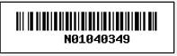
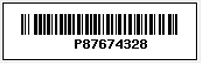

This week the project budget was due
Student Numbers
Part Numbers
For this week, I had my project fully assembled and ready to go. I also managed to ge the camera to recognize barcodes and printthem out on the terminal. I also soldered my PCB board, it just needs to be tested for next week.
The problem i had with the barcode program was that it kept freezing while scanning the barcodes sometimes. And it also did not recognize the barcodes that i customized, it only recgonized numbers as the barcode. A solution to this problem is to either change our barcode style or update the python program to read letters and number intead of just numbers. The language i used to program was Python although it can be done with C.
As for the next step, I need to test my PCB for shorts so that i could connect it and test it on my raspberry pI.